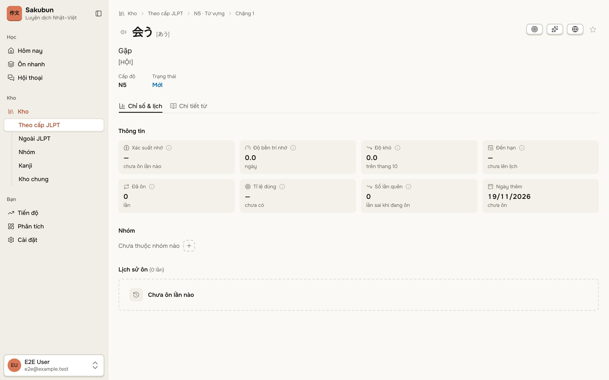
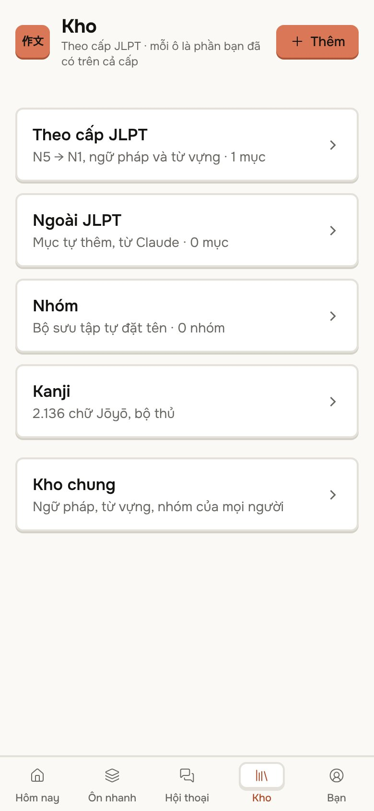
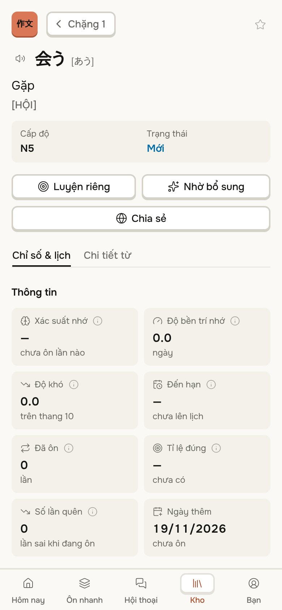

<!doctype html><meta charset="utf-8"><style>
body{margin:0;background:#e9e5df;font:15px system-ui;display:flex;gap:18px;padding:18px;align-items:flex-start;height:724px;box-sizing:border-box}
figure{margin:0;display:flex;flex-direction:column;gap:6px}figcaption{color:#555;text-align:center}
img{height:650px;border-radius:10px;box-shadow:0 2px 8px #0002;display:block}
</style><figure><figcaption>Laptop: trang 会う, mở từ N5 · Từ vựng › Chặng 1</figcaption></figure><figure><figcaption>Điện thoại: bấm tab Kho</figcaption></figure><figure><figcaption>Điện thoại: vào sâu</figcaption></figure>
